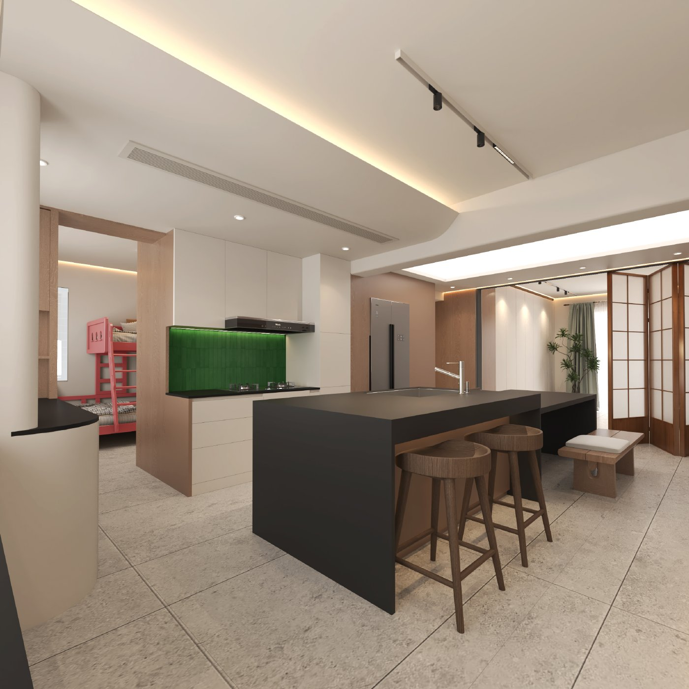

7 栋 2 单元 401 · 0918 设计方案
开放的日常，安静的私享。
来自施工图第 2–10 页

02 / 09
原图标注优先 · 尺寸单位 mm
依据《栖霞苑7栋2单元401-施工图 0918.pdf》中的平面布置图（第12页）、固定家具尺寸图（第23页）及立面图重建。
已标注的家具尺寸用于建模：岛台 2000 × 1100 mm、餐桌 1900 × 900 mm、主卧床 1800 × 2000 mm、活动区收纳柜长 3400 mm。
餐厨西侧柜体、岛台与餐桌按 P.12 标注尺寸定位：窄柜 440 × 1800 mm，南段柜 600 × 2240 mm，岛台距西侧柜面净宽 1360 mm；南段柜与窄柜在墙体转折处对齐。厨房西侧窗依据 P.01 与 EL.04 补建，窗台标高 970 mm、窗高 1380 mm，窗框与窗套按最新确认统一白色；窗宽未见明确标注，按平面图近似转绘。灶台右侧按 P.12 / EL.01 补建 500 mm 通高柜、200 mm 前部储物区（外立面为连续高柜）、墙垛饰面及冰箱上方封板；墙垛与冰箱位合计 1180 mm，内部分宽按平面近似转绘。岛台按 EL.08 调整为高 1010 mm、台面厚 120 mm，餐桌高 800 mm、台面厚 60 mm；次卧衣柜 2050 × 510 mm，柜门朝卧室；洗烘位 650 × 650 mm，洗漱台 900 + 580 mm、深 450 mm。补齐主卧斜角窗、阳台玻璃移门及室内门，修正衣柜饰面和分格。地砖规格按 P.08 分区。其余墙线与未标注的门窗宽度按平面图近似转绘，门扇开启状态为展示示意。依据 EL.05 / EL.07 的 2350 + 300 标注将室内完成面高度修正为 2.65 m；门窗、家具造型和材质纹理为示意，不能用于施工放样。默认降低墙体以便查看内部，开启“完整墙体”可查看空间围合关系。
效果图页展示的是原 PDF 内的设计图；三维空间页为本次独立重建的 Three.js 实时模型，两个视图的细节精度不同。多功能区沿用图纸留空布局，四扇折叠移门靠入口旁南墙收拢。
照明依据 P.04 天花布置、P.07 灯位尺寸及 P.09 开关连线。可在“灯光设计”切换日间、夜间及分区开关，并显示顶部灯具。尺寸标注优先；未标注的灯带端点近似转绘。暖白色温、亮度、光束及轨道模块数量为展示假设，非照度计算。
查看本轮图纸核对记录 ↗
操作：鼠标拖动旋转，滚轮缩放，右键拖动平移；触屏单指旋转，双指缩放或平移。画布聚焦后可用方向键平移，+ / − 缩放。